Serie animada 2D · Creador y director · Piloto en producción
Crónicas del Barro Infinito
El Cóndor tiene un dato: una caja china con partes de oro. La roba con Pepe, Joel y Pili y dejan Lanús a oscuras. Mientras buscan quién se la compre, el barrio se les viene encima y el supuesto tesoro empieza a parecer un peligro.
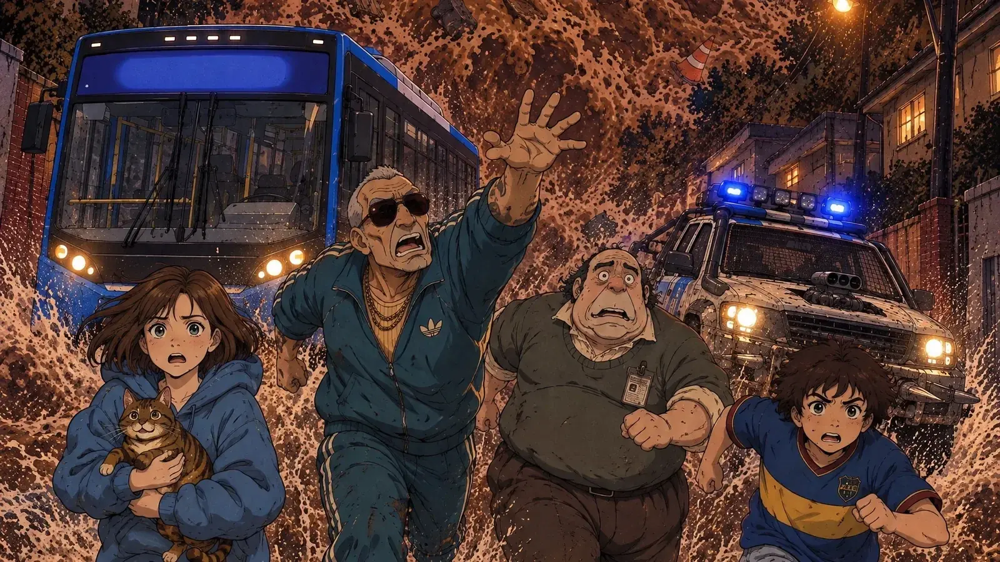
Formato
Serie animada 2D · YouTube · 16:9
Episodios
10, con el piloto
Duración
Flexible por episodio
Estado
Piloto EP00 en producción
Género
Aventura conurbana · humor negro · extrañeza
Idioma
Español rioplatense
Música
Original
Locación
Lanús, conurbano bonaerense
Sinopsis
Un dato, una caja, un apagón
Lanús, de noche. El Cóndor asegura que sabe dónde hay cobre del bueno y partes de oro. Pepe, Joel y Pili ya conocen sus versos, pero lo acompañan igual. Sacan una caja de un gabinete municipal y el barrio entero se queda sin luz.
Con el aparato bajo el brazo y Ranx, el gato, dando vueltas, buscan dónde venderlo: una peluquera que no piensa cerrar, dos policías rodeados de vecinos furiosos y un bazar donde el comprador quiere otra cosa. Dicen que en el fondo del Riachuelo vive un sapo del tamaño de una casa. La caja quiere que se la lleven bien lejos.
El conurbano es
un estado mental.
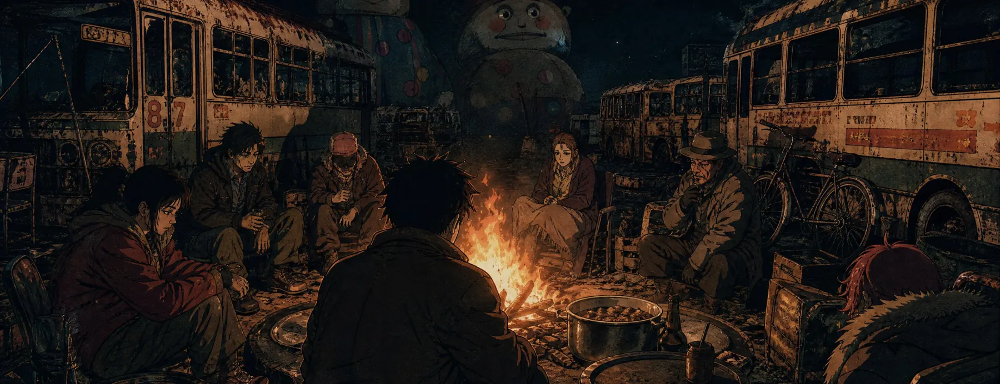
Personajes
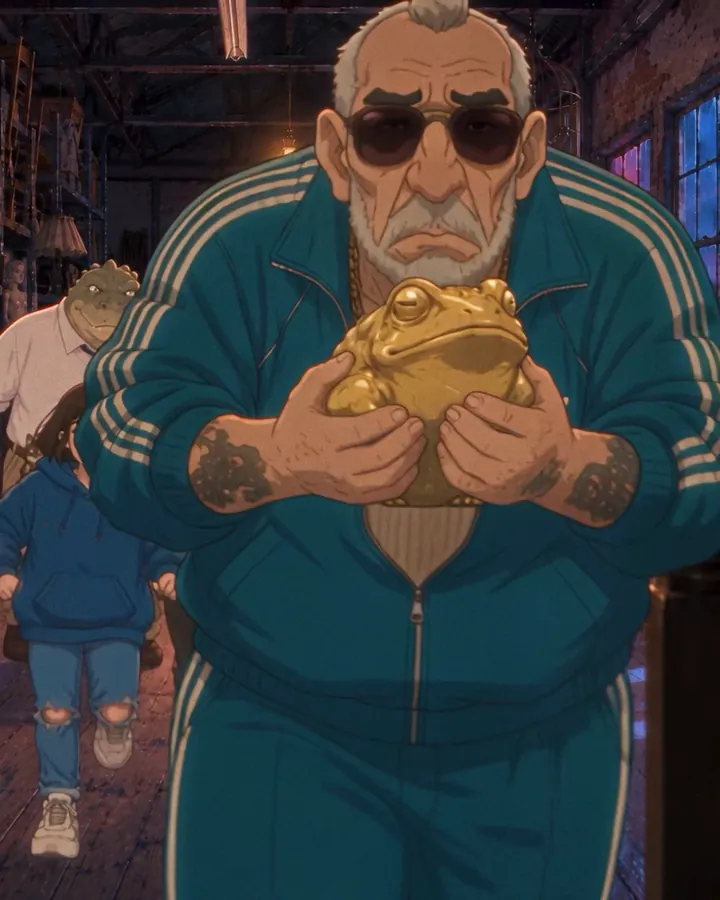
El Cóndor
El del dato. Adidas azul, cadena de oro y datos que siempre son truchos.
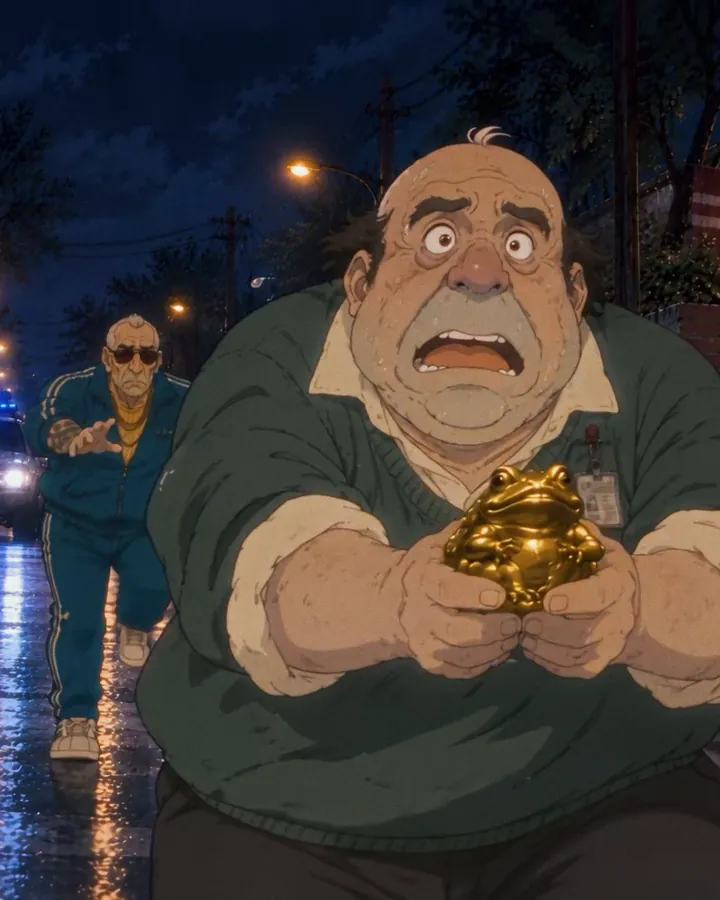
Pepe
El amigo del Cóndor desde la barrita del 94. Lleva las herramientas y parece más viejo de lo que es.
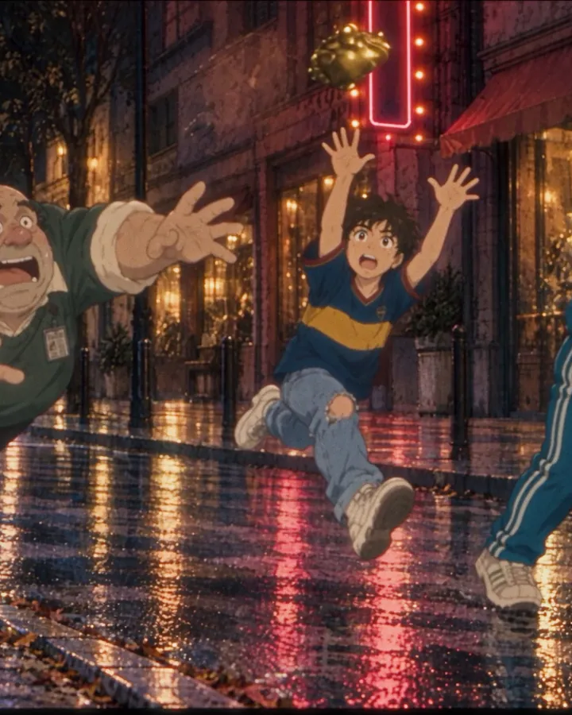
Joel, 12
El auditor. Cuenta faltas con los dedos y se tira de cabeza cuando hay algo que agarrar.
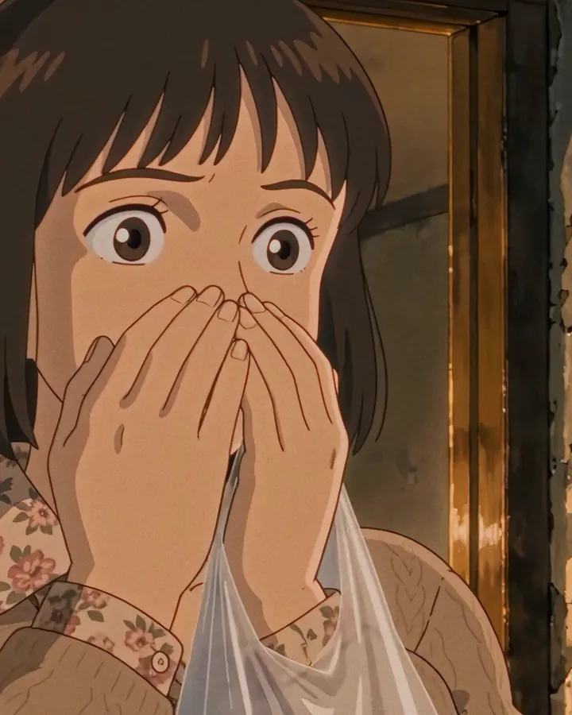
Pili, 13
La que se niega. Cuando todos corren, ella se queda quieta. Ranx, el gato, no se le despega.
Proceso
Láminas, layout y una toma por plano
Cada plano del opening se generó en una sola toma con Seedance 2.5, con las láminas de personaje y el layout 3D como referencia. Lo que no cerró se parchó con keyframes de imagen y se terminó en Premiere.
01Diseño de personaje
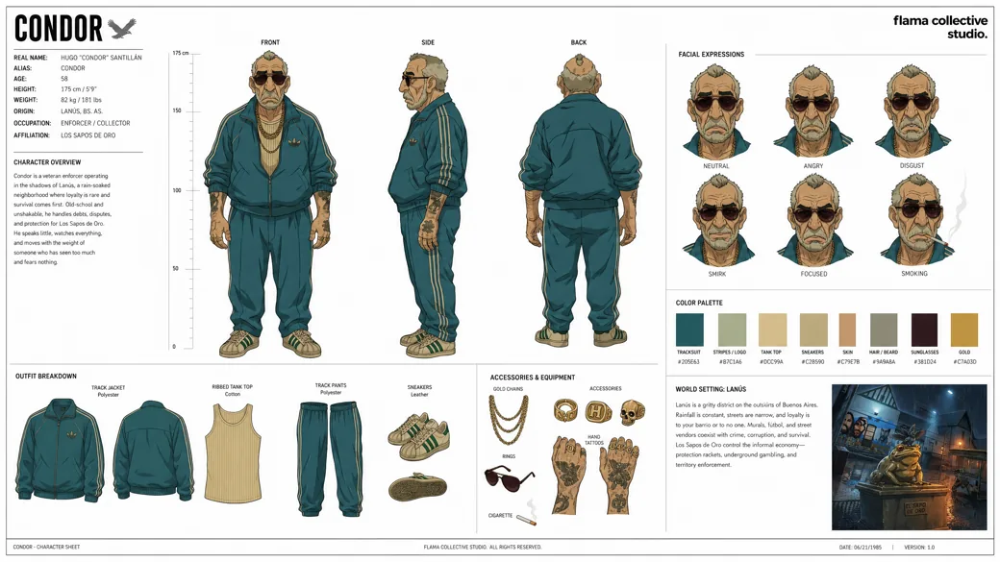
Turnaround, paleta, prendas y expresiones. Es la referencia que después entra a generación.
02Diseño de prop
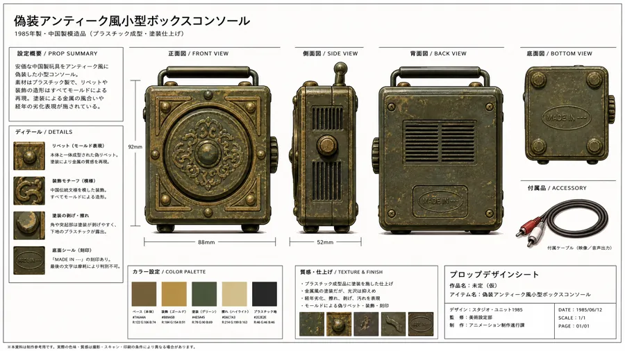
La caja del robo, la que arranca el piloto. Los objetos que vuelven tienen su lámina igual que los personajes.
03Locación
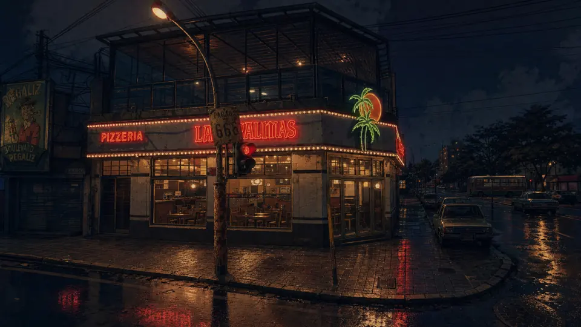
La pizzería. Veinte locaciones con lámina propia sostienen la continuidad del barrio.
04Blockout 3D
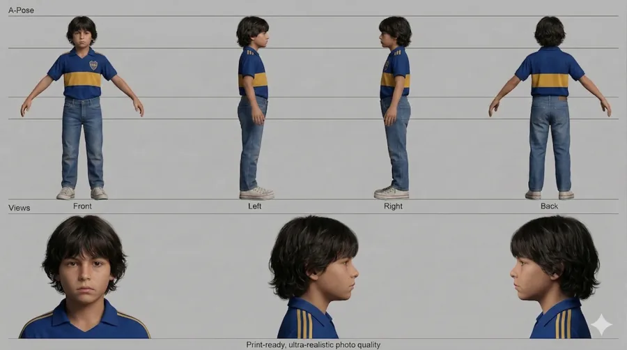
A-pose y cuatro vistas. Sirve para fijar altura y cámara antes de generar: la escala deja de discutirse.
05Keyframe de look
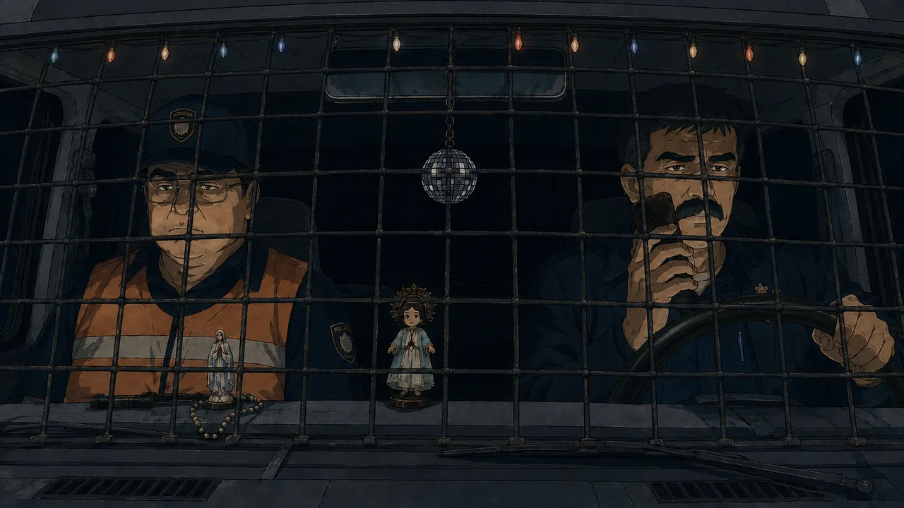
La escena 4.2 del piloto fijada en un cuadro: paleta, luz y puesta, antes de generar el plano.
06Plano generado
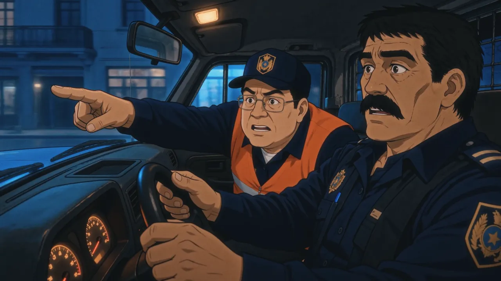
Los mismos policías en el opening, generados en una toma con el keyframe y las láminas como referencia.
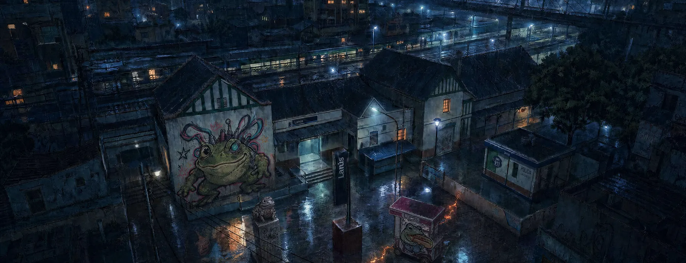
¿Te interesa el proyecto?
Siguiente proyecto
Flama Squad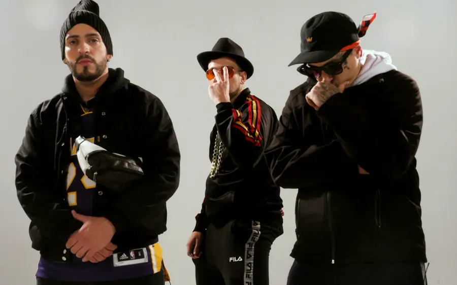